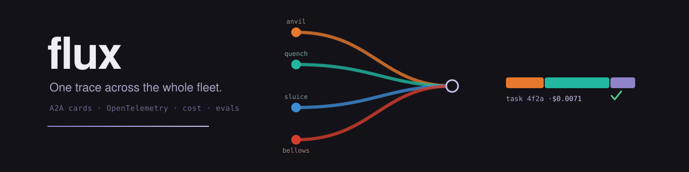
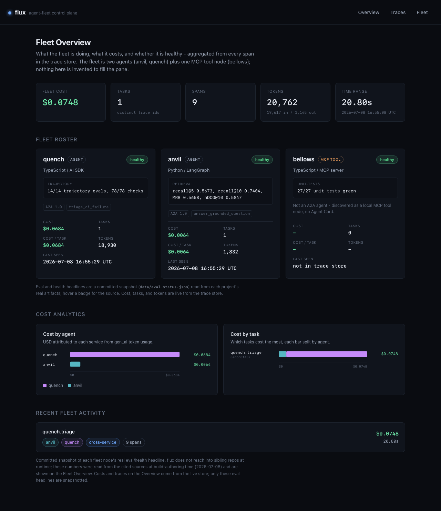
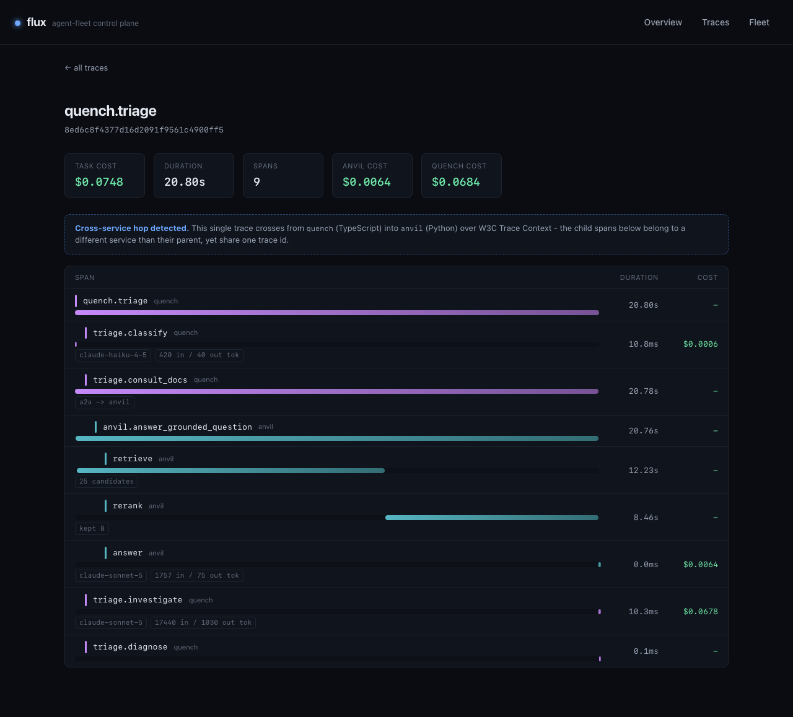

flux
One trace across the whole fleet.
Real agent systems are not one framework. A request starts in a TypeScript agent, crosses into a Python agent, and the story fragments: every framework has its own idea of a trace and its own cost accounting. flux ingests OpenTelemetry spans over OTLP/HTTP, stitches them into one distributed trace with W3C Trace Context, discovers agents from their A2A Agent Cards, and binds USD cost to each task. The only contracts are open standards, so any agent that speaks them shows up.

How it works
The make-or-break capability, proven end to end with real telemetry: one request from the quench triage agent (TypeScript, AI SDK) crosses into the anvil docs agent (Python, LangGraph), and flux shows it as one trace with per-agent cost.
- 01Emit.
Both agents run the genuine OpenTelemetry SDK (JS and Python) and export OTLP/HTTP JSON to flux's ingest route, POST /v1/traces. Spans have real ids, timing, parent links, and resource attributes.
- 02Propagate.
quench injects its active span's W3C traceparent into the outgoing A2A request; anvil extracts it, so the Python spans become children of the TypeScript span that called them. The proof asserts exactly this parent link.
- 03Stitch and store.
flux parses resourceSpans, reads service.name from each resource, and stores every span with its parent link and attributes in an embedded SQLite store.
- 04Discover.
Each agent serves a spec-1.0 A2A Agent Card at /.well-known/agent-card.json; flux fetches and stores them so the fleet roster shows real identities and skills, not config strings.
- 05Bind cost.
USD is computed from the gen_ai token-usage attributes carried on the spans against a dated July 2026 price table, to sub-cent precision, attributed to agent and task.
quench.triage quench 20.80s ├─ triage.classify quench 10.8ms $0.0006 ├─ triage.consult_docs a2a -> anvil quench 20.78s │ └─ anvil.answer_grounded_question anvil 20.76s ← cross-service hop │ ├─ retrieve 25 candidates anvil 12.23s │ ├─ rerank kept 8 anvil 8.46s │ └─ answer 1757 in/75 out anvil $0.0064 ├─ triage.investigate 17440 in/1030 quench $0.0678 └─ triage.diagnose quench 0.1ms task total $0.0748
The panes
The landing page is the Fleet Overview: what the fleet is doing, what it costs, and whether it is healthy, aggregated live from every span in the store. Everything on it comes from real spans: the bundled fleet is two agents plus one MCP tool node, and nothing is invented to fill the dashboard.


Quickstart
Requirements: Node 22+, Python 3.13+ with uv, and Docker for the Postgres that anvil retrieves from. The telemetry is real: OpenTelemetry spans over OTLP, stitched across the language boundary.
# unit tests: OTLP parse, parent-child stitch, cost math, card fetch npm install npm run test # the make-or-break: a real TS->Python trace, stitched, asserted npm run proof # end-to-end demo: starts flux + anvil + quench, runs one real triage # across the boundary, confirms the stitched trace ./scripts/demo.sh # open http://127.0.0.1:3100